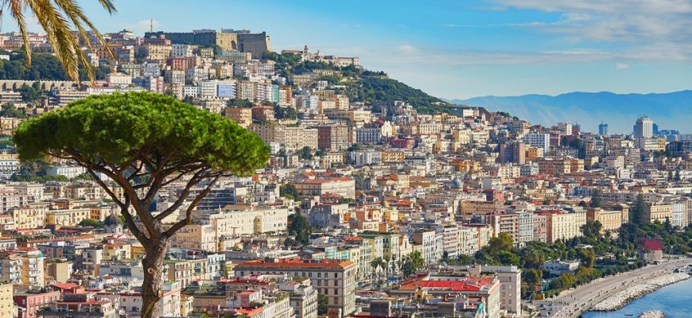

City's Most Famous Alleyway

Naples is the regional capital of Campania and the third-largest city of Italy after Rome and Milan. In 2017, around 967,069 people lived within the city's administrative limits; its province-level municipality has a population of 3,115,320 residents. Its continuously built-up metropolitan area (that stretches beyond the boundaries of the Metropolitan City of Naples) is the second or third largest metropolitan area in Italy and one of the most densely populated cities in Europe.
First settled by Greeks in the second millennium BC, Naples is one of the oldest continuously inhabited urban areas in the world. In the ninth century BC, a colony known as Parthenope or Παρθενόπη was established on the Island of Megaride. In the 6th century BC, it was refounded as Neápolis. The city was an important part of Magna Graecia, played a major role in the merging of Greek and Roman society, and was a significant cultural centre under the Romans.
It served as the capital of the Duchy of Naples (661–1139), then of the Kingdom of Naples (1282–1816), and finally of the Two Sicilies until the unification of Italy in 1861. Naples is also considered a capital of the Baroque, beginning with the artist Caravaggio's career in the 17th century, and the artistic revolution he inspired.
Due to poverty and lack of opportunity, waves of Italians emigrated from Naples in the late 19th and early 20th century, with most going to the United States, where they settled in industrial cities. Between 1925 and 1936, Naples was expanded and upgraded by Benito Mussolini's government. During the later years of World War II, it sustained severe damage from Allied bombing as they invaded the peninsula. The city received extensive post-1945 reconstruction work.
Since the late 20th century, Naples has had significant economic growth, helped by the construction of the Centro Direzionale business district and an advanced transportation network, which includes the Alta Velocità high-speed rail link to Rome and Salerno and an expanded subway network. Naples is the third-largest urban economy in Italy, after Milan and Rome. The Port of Naples is one of the most important in Europe. In addition to commercial activities, it is home to the Allied Joint Force Command Naples, the NATO body that oversees North Africa, the Sahel and Middle East.
Naples' historic city centre is the largest in Europe and has been designated as a UNESCO World Heritage Site. A wide range of culturally and historically significant sites are nearby, including the Palace of Caserta and the Roman ruins of Pompeii and Herculaneum. Naples is also known for its natural beauties, such as Posillipo, Phlegraean Fields, Nisida, and Vesuvius.
Neapolitan cuisine is noted for its association with pizza, which originated in the city, as well as numerous other local dishes. Naples' restaurants have earned the most stars from the Michelin Guide of any Italian city.
The best-known sports team in Naples is the Serie A club S.S.C. Napoli, two-time Italian champions who play football at the San Paolo Stadium in the southwest of the city, in the Fuorigrotta quarter.